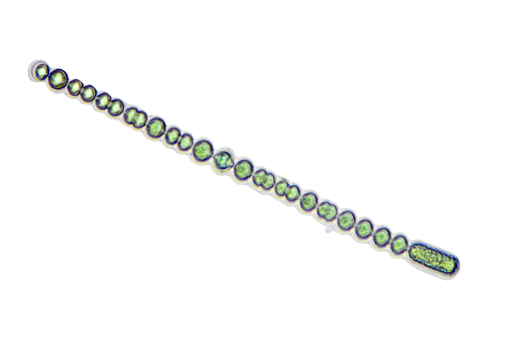
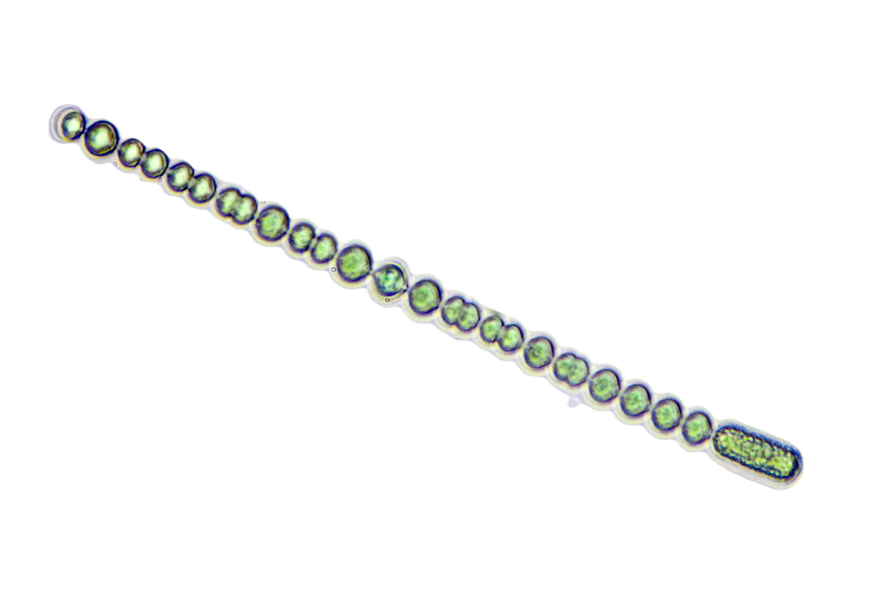

Descripción microbiológica
Anabaena es un género de cianobacterias filamentosas (orden Nostocales) que forma cadenas celulares (tricomas) de 5-12 µm de diámetro, con células especializadas: heterocistos (fijación de nitrógeno) y acinetos (estructuras de resistencia). Carece de flagelos pero presenta movimiento por deslizamiento. Su coloración verde-azulada se debe a pigmentos como ficocianina y clorofila a. Es fotoautótrofa oxigénica y puede fijar CO2 y N2 simultáneamente. Forma colonias mucilaginosas en aguas dulces.
Características distintivas
- Morfología: Filamentos no ramificados con heterocistos intercalados.
- Metabolismo: Fotosíntesis oxigénica + fijación de N2 (en heterocistos).
- Adaptaciones: Síntesis de microcistinas (toxinas hepatotóxicas) en algunas cepas.
- Genoma: Plásmidos pequeños y cromosoma circular (7-10 Mbp).
Ecología y hábitat
Habita en aguas dulces eutróficas (lagos, embalses, arrozales) y simbiosis con plantas (helechos Azolla). Prospera en temperaturas de 15-30°C y pH 6-9. Las floraciones ("blooms") ocurren en verano con altos niveles de fósforo (>50 µg/L). Contribuye a la fertilidad del suelo en arrozales mediante fijación de nitrógeno. Es bioindicadora de contaminación por nutrientes (eutrofización).
Factores ambientales
- Supervivencia: Acinetos resisten desecación y frío durante décadas.
- Floraciones: Favorecidas por luz intensa, temperaturas >20°C y relación N:P <20:1.< /li>
- Biocidas: Sensible a sulfato de cobre (1 mg/L) y peróxido de hidrógeno.
Mecanismos de toxicidad
Cepas toxigénicas producen metabolitos secundarios dañinos:
| Toxina | Mecanismo | Efecto |
|---|---|---|
| Microcistina-LR | Inhibe fosfatasas (PP1/PP2A) | Hepatotoxicidad aguda |
| Anatoxina-a | Agonista de receptores nicotínicos | Parálisis respiratoria |
| Saxitoxina | Bloquea canales de Na⁺ | Parálisis neuromuscular |
Impactos en salud y ecosistemas
- Intoxicaciones agudas: Daño hepático (humanos y animales) por consumo de agua contaminada.
- Alteración ecológica: Hipoxia nocturna por descomposición de floraciones ("zonas muertas").
- Bioacumulación: Toxinas en peces y moluscos (riesgo en cadena alimentaria).
- Problemas en agua potable: Olores/ sabores desagradables (geosmina, MIB).
Identificación y control
Métodos de detección:
- Microscopía óptica (filamentos con heterocistos, ausencia de ramificaciones).
- PCR para genes mcy (síntesis de microcistinas) o anaC (anatoxinas).
- ELISA/HPLC para cuantificación de toxinas.
Estrategias de manejo:
- Prevención: Reducción de fertilizantes fosfatados en cuencas.
- Control físico: Ultrasonido, filtración o aireación de aguas.
- Tratamiento químico: Sulfato de cobre (precaución por toxicidad residual).
- Biorremediación: Bacterias degradadoras (ej. Sphingomonas).
Aplicaciones biotecnológicas
- Fertilización natural: Simbiosis con Azolla para arrozales.
- Producción de biocombustibles: Biohidrógeno mediante nitrogenasas.
- Bioplásticos: Síntesis de PHA (polihidroxialcanoatos).
Datos epidemiológicos
- Responsable del 25% de floraciones cianobacterianas tóxicas globales.
- Eventos documentados: Muerte de ganado (Australia, 1991), intoxicaciones humanas (Brasil, 1996).
- Límite OMS para microcistinas en agua potable: 1 µg/L.